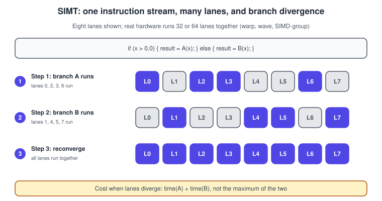
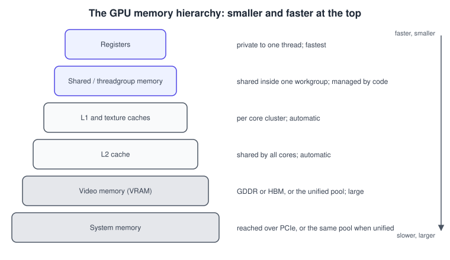
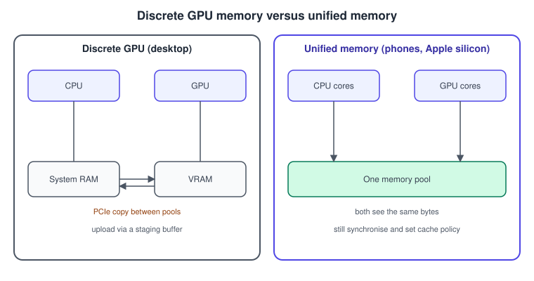
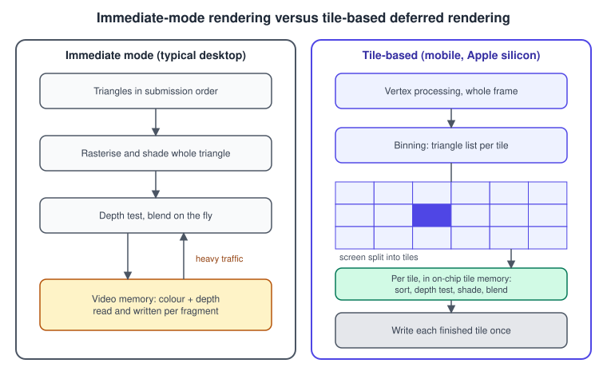
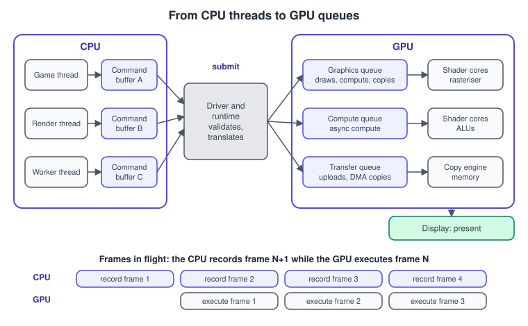

GPU Architecture Basics
|
This content was generated with the assistance of AI and should be verified against the official documentation before being relied on in production. |
Every graphics API is a thin description of one machine: the GPU. Its object names (queues, command buffers, workgroups, render passes, storage modes) only make sense once you know what that machine is good at and what it costs to ask it for something else. This page explains the machine at the level every application programmer needs: how a GPU executes programs, how its memory is organised, why mobile and Apple GPUs render in tiles, how work reaches it through command buffers and queues, and what the driver does in between.
The facts were checked in November 2026. The terminology follows Vulkan 1.4, Metal 4, WebGPU (W3C Candidate Recommendation Draft) and OpenGL 4.6, and the hardware descriptions are the general design shared by the main desktop, mobile and Apple GPUs. Specific numbers (core counts, cache sizes, bandwidth) are intentionally left out because they change every year; read them from the vendor documentation for the device you target.
A different kind of processor
A CPU is built to finish one thread of unpredictable code as soon as possible. It has a few cores, large caches, branch predictors and out-of-order machinery that hide the latency of a single instruction stream. A GPU is built to finish a huge number of similar small jobs as soon as possible. It has thousands of simple arithmetic lanes, small caches per core cluster and very high memory bandwidth, and it hides latency not by predicting but by switching to another group of threads while one waits.
| Property | CPU | GPU |
|---|---|---|
Design goal |
Low latency for one thread |
High throughput for many threads |
Parallelism |
A handful to a few dozen cores, each with SIMD units |
Many compute units, each running many threads in lockstep groups |
Latency hiding |
Caches, prediction, out-of-order execution |
Switching between resident thread groups |
Control flow |
Branches are cheap when predicted |
Branches are cheap only when the whole group agrees |
Memory |
Large coherent caches, system RAM |
Small caches, very wide memory bus, explicit local memory |
Programming model |
Threads and locks |
Data-parallel kernels, barriers within a group, queues for ordering |
Graphics is the ideal GPU workload. A 4K frame has about eight million pixels, each running the same fragment shader on different data, and the shaded vertices and pixels are independent of one another.
SIMT: lockstep threads in groups
A GPU executes a shader by launching one thread (called an invocation) per vertex, per fragment or per compute work-item. The hardware groups invocations into fixed-size bundles that share one instruction pointer and execute each instruction together. This is SIMT (single instruction, multiple threads), a close relative of SIMD with per-lane masking. The bundle has different names per ecosystem and a size that depends on the hardware.
| Term | Where it is used | Typical size |
|---|---|---|
Warp |
NVIDIA documentation |
32 lanes |
Wavefront or wave |
AMD documentation and Direct3D; AMD GPUs can run waves of 32 or 64 |
32 or 64 lanes |
SIMD-group |
Metal (Apple GPUs) |
32 lanes |
Subgroup |
Vulkan, OpenGL ( |
vendor-dependent, queried at run time |
Vulkan exposes the size through subgroup properties and lets the shader use subgroup operations such as ballot and shuffle; WGSL and Metal expose equivalent built-ins. Code that depends on one fixed size is not portable.
Branch divergence
All lanes of a bundle execute the same instruction at a time. When a branch sends some lanes one way and some the other,
the hardware runs both paths one after the other, masking off the lanes that are not on the current path. The cost of an
if is therefore the sum of its two sides when the lanes of one bundle disagree, and only the taken side when they all agree.

Neighbouring pixels usually take the same branch, so divergence is cheap in most fragment shaders. It is costly when the branch condition varies from lane to lane, for example a per-pixel noise test, or a loop whose trip count differs per pixel.
// Divergent: lanes with different lamp distances take different paths
#version 460 core
in vec3 vNormal;
in vec3 vToLamp;
uniform vec3 uColor;
out vec4 fragColor;
void main() {
float d = length(vToLamp);
vec3 c;
if (d < 2.0) { // close to the desk lamp
c = uColor * max(dot(normalize(vNormal), normalize(vToLamp)), 0.0);
} else {
c = uColor * 0.1; // ambient only
}
fragColor = vec4(c, 1.0);
}
// Branch-free version: both sides are cheap, so compute and select
// float lit = step(d, 2.0);
// vec3 c = mix(uColor * 0.1,
// uColor * max(dot(normalize(vNormal), normalize(vToLamp)), 0.0), lit);Compilers often turn short branches into selects on their own. Write a branch when one side is expensive and rarely taken; write a select when both sides are a few instructions.
Occupancy and latency hiding
A GPU core keeps many bundles resident at once. When one bundle waits for a texture fetch, the core runs another. The fraction of the core’s capacity in use is occupancy. Each resident bundle needs registers and, for compute shaders, local memory, so a shader that uses many registers leaves room for fewer bundles and hides less latency. High occupancy is not always the goal (some tuned kernels run faster at low occupancy), but a shader that is slow and low-occupancy is a first suspect.
The memory hierarchy
GPU memory is a pyramid of increasingly large and slow stores. Fast memory is scarce and mostly private, and the program, the compiler or the hardware decides who may use it.

-
Registers hold the local variables of each invocation. They are the fastest storage and a main limit on occupancy.
-
Shared memory (called
sharedin GLSL compute,var<workgroup>in WGSL,threadgroupin Metal,groupsharedin HLSL) is a small on-chip memory shared by one workgroup. The program loads it explicitly and synchronises with a barrier. It turns repeated reads of slow memory into fast ones. -
Caches (L1, texture, L2) are automatic. Textures are cached with a layout tuned for two-dimensional locality, which is why sampling neighbouring texels is cheap.
-
Video memory and system memory hold buffers, textures and render targets. Bandwidth, not arithmetic, limits most rendering work; reading a four-byte pixel from memory costs far more than computing with it.
The best way to use shared memory is a cooperative reduction: each workgroup loads a block, combines it on chip and writes one result. The following WGSL kernel sums a block of 64 floats per workgroup (for example to average the luminance of an image tile before tone mapping).
@group(0) @binding(0) var<storage, read> src : array<f32>;
@group(0) @binding(1) var<storage, read_write> dst : array<f32>;
var<workgroup> partial : array<f32, 64>;
@compute @workgroup_size(64)
fn main(@builtin(global_invocation_id) gid : vec3<u32>,
@builtin(local_invocation_index) lid : u32,
@builtin(workgroup_id) wid : vec3<u32>) {
// Out-of-range invocations contribute zero.
partial[lid] = select(0.0, src[gid.x], gid.x < arrayLength(&src));
workgroupBarrier();
for (var stride = 32u; stride > 0u; stride = stride >> 1u) {
if (lid < stride) {
partial[lid] = partial[lid] + partial[lid + stride];
}
workgroupBarrier();
}
if (lid == 0u) {
dst[wid.x] = partial[0];
}
}Source: W3C: WebGPU Shading Language.
Pitfalls of local memory: a barrier must be reached by every invocation of the workgroup in uniform control flow, shared memory is split into banks and several lanes reading the same bank in different rows cost extra cycles, and the amount per workgroup has a device limit that WebGPU, Vulkan and Metal all expose as a queryable limit.
Discrete and unified memory
On a desktop PC with a discrete GPU the CPU and GPU have separate memory pools joined by PCIe. The CPU writes data into system RAM, a copy engine moves it to video memory, and the GPU reads it from there. On phones, tablets, laptops with Apple silicon and many integrated GPUs, both processors use one pool.

What this means in practice:
-
On discrete hardware, upload through a staging buffer: write into CPU-visible memory, then copy to a device-local resource with the transfer queue. Vulkan names the memory types (device-local, host-visible, host-coherent) and the application chooses; OpenGL and WebGL hide the copy in the driver.
-
On unified hardware there is no copy to do, but the CPU and GPU still use caches that must be kept consistent. Metal’s storage modes express the choices: shared (CPU and GPU see the same bytes), private (GPU only, best for static assets and render targets), memoryless (tile memory only, no backing allocation) and managed (a copy kept in sync, now deprecated in the 2026 operating systems, together with Intel GPU families).
-
Resizable BAR and similar features let a CPU write directly into a large part of video memory, reducing the need for staging on modern desktop hardware.
-
Keep resources the GPU only reads (meshes, textures) in device-local memory. Keep per-frame data (uniforms) in memory that is cheap for the CPU to write and for the GPU to read, and double- or triple-buffer it so the CPU does not overwrite data the GPU is still using.
Immediate-mode and tile-based rendering
Desktop GPUs are traditionally immediate-mode renderers (IMR). Each triangle is rasterised and shaded as it arrives, and the colour and depth buffers live in video memory, read and written for every fragment. A cache absorbs part of the traffic, but the bandwidth cost is high.
Mobile GPUs and all Apple GPUs use tile-based rendering (TBR), and Apple’s version is tile-based deferred rendering (TBDR). The GPU first processes all the vertices of a render pass and sorts the triangles into the screen tiles they touch (a small rectangle such as 16 by 16 or 32 by 32 pixels). It then renders one tile at a time in small on-chip tile memory, and writes the finished tile to memory once, at the end of the pass.

TBR changes how you should write a renderer:
-
A render pass is a unit of work, not a mere bracket. Load and store actions say what happens to each attachment at the start and end of the pass. Use
clearrather thanloadwhen the old contents do not matter anddontCarerather thanstorefor attachments you will not read (depth, MSAA targets), because they never need to touch memory. -
Intermediate data that is consumed within the pass (depth, a G-buffer) can be memoryless: it lives only in tile memory and costs no memory at all.
-
Switching render targets mid-frame flushes tiles to memory and is expensive on TBR hardware. Avoid breaking a pass without a reason; merge passes (Vulkan subpasses and dynamic rendering local reads, Metal programmable blending, framebuffer fetch).
-
Alpha-blended overdraw is cheaper than on IMR hardware because blending happens on chip, but alpha testing and
discardcan defeat hidden-surface removal in TBDR GPUs.
import Metal
// Depth for a render pass that never reads it back: tile memory only, no allocation.
let device = MTLCreateSystemDefaultDevice()!
let descriptor = MTLTextureDescriptor.texture2DDescriptor(
pixelFormat: .depth32Float, width: 1920, height: 1080, mipmapped: false)
descriptor.usage = .renderTarget
descriptor.storageMode = .memoryless // Apple GPUs only
let depth = device.makeTexture(descriptor: descriptor)!
let pass = MTLRenderPassDescriptor()
pass.depthAttachment.texture = depth
pass.depthAttachment.loadAction = .clear
pass.depthAttachment.storeAction = .dontCare // never written back to memory
pass.depthAttachment.clearDepth = 1.0Source: Apple: MTLStorageMode.memoryless.
Desktop GPUs also use tiles internally for caching and binning, and some desktop vendors rasterise in tiles, but the API contract (render passes with explicit load and store) is designed so the same renderer is correct on both kinds of hardware.
Command buffers and queues
The CPU does not call the GPU like a function. It records commands (set a pipeline, bind resources, draw) into a command buffer, which is a block of memory in the driver’s format, and then submits the buffer to a queue. The GPU consumes the queue asynchronously.

-
Several CPU threads can record several command buffers in parallel; one thread submits them. This is the main source of CPU scaling in Vulkan, Metal and Direct3D 12 (OpenGL has one context per thread and little parallel recording).
-
A GPU exposes one or more queue families with different capabilities: graphics (draw, compute and copy), compute and transfer. Work on different queues can overlap, which is how asynchronous compute and background uploads work.
-
The CPU runs ahead of the GPU by one or more frames (frames in flight). Two or three frames in flight keep both busy; more adds latency, fewer risks idle time. Resources used by an in-flight frame must not be modified or freed until a fence, semaphore or completion handler says that frame finished.
-
Present hands the finished image to the display engine. Present modes decide whether it waits for the next vertical blank (FIFO, the only mode every Vulkan implementation must support), may replace a queued image (mailbox) or tears (immediate).
/* Vulkan: find a queue family that supports graphics and one that is transfer-only */
uint32_t count = 0;
vkGetPhysicalDeviceQueueFamilyProperties(physicalDevice, &count, NULL);
VkQueueFamilyProperties *families = malloc(count * sizeof *families);
vkGetPhysicalDeviceQueueFamilyProperties(physicalDevice, &count, families);
uint32_t graphicsFamily = UINT32_MAX, transferFamily = UINT32_MAX;
for (uint32_t i = 0; i < count; ++i) {
VkQueueFlags f = families[i].queueFlags;
if ((f & VK_QUEUE_GRAPHICS_BIT) && graphicsFamily == UINT32_MAX) graphicsFamily = i;
if ((f & VK_QUEUE_TRANSFER_BIT) && !(f & VK_QUEUE_GRAPHICS_BIT)) transferFamily = i;
}
free(families);Metal’s classic model is the same idea with fewer objects: a command queue creates command buffers, you encode render,
compute and blit passes into them, and commit submits. Metal 4 splits the roles further into command queues, command
buffers and command allocators for finer control of memory and parallel encoding.
import Metal
guard let device = MTLCreateSystemDefaultDevice(),
let queue = device.makeCommandQueue(),
let commandBuffer = queue.makeCommandBuffer() else {
fatalError("Metal is not available on this device")
}
commandBuffer.label = "Bookshelf frame"
// ... encode a render pass, a compute pass or a blit pass here ...
commandBuffer.addCompletedHandler { buffer in
// the GPU has finished: safe to reuse this frame's resources
if let error = buffer.error { print("GPU error: \(error)") }
}
commandBuffer.commit()Source: Apple: MTLCommandQueue and MTLCommandBuffer.
The driver
Between the API and the hardware sits the driver. In OpenGL and WebGL it does a great deal: it tracks state, validates every call, allocates memory, schedules transfers, hides latency and infers synchronisation. In Vulkan, Metal 4, Direct3D 12 and WebGPU it does much less, because the application does that work explicitly; this is the origin of their performance and of their length.
Several driver tasks affect performance in any API:
-
Shader compilation. Source or an intermediate form (SPIR-V, Metal IR, DXIL) is compiled to machine code for the exact GPU. Compiling takes milliseconds to seconds and can cause visible hitches the first time a shader is used. Pipeline caches, binary archives and pre-warming at load time hide it.
-
State validation. Changing blend state, render targets or vertex layout may cause a recompile or a re-validation. Explicit APIs move it to pipeline creation, off the hot path.
-
Memory management. Residency (what is in video memory), defragmentation and eviction under pressure are the driver’s job in OpenGL and yours in Vulkan, usually through an allocator library.
-
Scheduling and power. The driver and operating system decide queue priorities, clocks and when to power the GPU down.
Common mistakes
-
Assuming the GPU runs commands when you call the API. A draw call returns immediately; the GPU runs it later. Reading results back stalls the CPU until the GPU catches up.
-
Dividing a frame into many tiny draw calls and many state changes. The CPU or the driver, not the GPU, becomes the limit.
-
Putting branches and loops with per-lane trip counts in hot fragment shaders.
-
Uploading a texture every frame through the slow path. Upload once to device-local memory, or use persistent or staged buffers for data that must change.
-
Writing code that depends on a subgroup size, a fixed shared memory size or a cache line length of one vendor.
-
Treating mobile and desktop as the same architecture. Techniques that reduce draw calls (batching) help everywhere, but techniques that restructure passes (merging,
dontCare, memoryless) matter most on tilers.
Performance notes
-
Measure before guessing: the section’s page on performance and profiling explains which tools show occupancy, bandwidth and pipeline stalls for each platform.
-
The usual limits, in order of frequency: CPU or driver overhead, memory bandwidth, fragment shading cost (overdraw), vertex throughput, and only then arithmetic.
-
Bandwidth is saved by compressed textures, lower precision (half floats), smaller render-target formats and avoiding copies.
-
Overlap work: submit compute or copy work on separate queues when the dependencies allow it.
-
Keep two or three frames in flight and pace the CPU to the display; see Game Loop and Frame Timing.
What the books cover and where they are outdated
OpenGL SuperBible (chapter 1 and the pipeline chapters), the OpenGL ES 3.0 Programming Guide (chapters 1 and 7) and Selman’s Java 3D Programming (chapters 2 and 18, on rendering and threads) describe the machine as a fixed-function pipeline with a single rendering thread. The conceptual order of operations they describe is still valid; the hardware behind it is not.
| Statement in the books | Situation in 2026 |
|---|---|
The GPU is a fixed pipeline of dedicated transformation, lighting and texturing units |
Modern GPUs run unified programmable cores; fixed-function hardware remains only for rasterisation, texture filtering, blending and, on some GPUs, ray traversal. |
A single rendering thread talks to the GPU through one context |
Vulkan, Metal, Direct3D 12 and WebGPU record on many threads and submit to several queues. |
Video memory is a separate resource you rarely think about |
On Apple silicon and phones, memory is unified; on desktops, bus transfers and staging are an explicit design concern. |
Rendering is immediate: each triangle is drawn as it is submitted |
Mobile and Apple GPUs defer and tile; render pass load and store actions are part of the API. |
Recent changes
-
Metal 4 (2025) requires an A14 or M1 GPU or later, adds separate command queues, buffers and allocators, and the 2026 operating systems deprecate managed storage and Intel GPU families.
-
Vulkan 1.3 made dynamic rendering part of the core, and Vulkan 1.4 (December 2024) added dynamic rendering local read, which makes tile-friendly rendering available without render-pass objects.
-
WebGPU exposes compute, workgroup memory and subgroup features to the browser; subgroups are an optional feature that you request at device creation.
-
Mesh shaders and hardware ray tracing add further queue and memory behaviour; see Advanced Pipeline Stages.
See it in
OpenGL: OpenGL Performance; Metal: GPU Architecture and TBDR; Vulkan: Queues and Command Buffers; Unity: URP in Depth; Unreal Engine: Rendering Overview.
References
-
Android GPU Inspector for mobile GPU behaviour
-
Daniel Selman, Java 3D Programming (Manning, 2002): publisher page
-
Wright, Lipchak and Haemel, OpenGL SuperBible, 4th edition (Addison-Wesley, 2007) and Ginsburg, Purnomo et al., OpenGL ES 3.0 Programming Guide (Addison-Wesley, 2014): the publisher pages are listed in the section bibliography